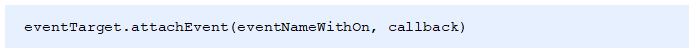
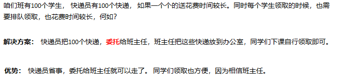
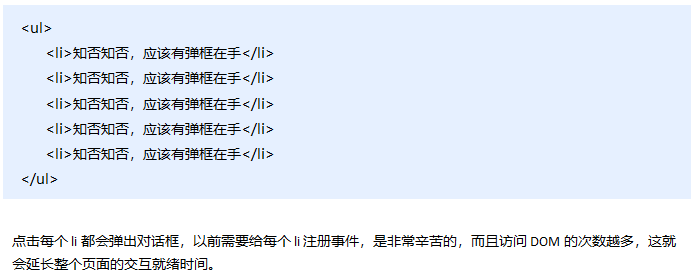
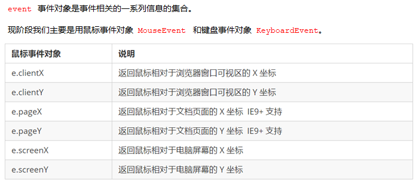

day03 - Web APIs
学习目标：
能够使用removeChild()方法删除节点
能够完成动态生成表格案例
能够使用传统方式和监听方式给元素注册事件
能够说出事件流执行的三个阶段
能够在事件处理函数中获取事件对象
能够使用事件对象取消默认行为
能够使用事件对象阻止事件冒泡
能够使用事件对象获取鼠标的位置
能够完成跟随鼠标的天使案例
1.1. 节点操作 1.1.1 删除节点
node.removeChild() 方法从 node节点中删除一个子节点，返回删除的节点。
1 2 3 4 5 6 7 8 9 10 11 12 13 14 15 16 17 18 19 20 21 <button>删除</button> <ul> <li>熊大</li> <li>熊二</li> <li>光头强</li> </ul> <script> var ul = document .querySelector('ul' ); var btn = document .querySelector('button' ); btn.onclick = function ( if (ul.children.length == 0 ) { this .disabled = true ; } else { ul.removeChild(ul.children[0 ]); } } </script>
1.1.2 案例：删除留言
1 2 3 4 5 6 7 8 9 10 11 12 13 14 15 16 17 18 19 20 21 22 23 24 25 26 27 28 29 30 31 32 33 34 35 <textarea name="" id="" ></textarea> <button>发布</button> <ul> </ul> <script> var btn = document .querySelector('button' ); var text = document .querySelector('textarea' ); var ul = document .querySelector('ul' ); btn.onclick = function ( if (text.value == '' ) { alert('您没有输入内容' ); return false ; } else { var li = document .createElement('li' ); li.innerHTML = text.value + "<a href='javascript:;'>删除</a>" ; ul.insertBefore(li, ul.children[0 ]); var as = document .querySelectorAll('a' ); for (var i = 0 ; i < as .length; i++) { as [i].onclick = function ( ul.removeChild(this .parentNode); } } } } </script>
1.1.3 复制（克隆）节点
1 2 3 4 5 6 7 8 9 10 11 12 <ul> <li>1111 </li> <li>2 </li> <li>3 </li> </ul> <script> var ul = document .querySelector('ul' ); var lili = ul.children[0 ].cloneNode(true ); ul.appendChild(lili); </script>
1.1.4 案例：动态生成表格
1 2 3 4 5 6 7 8 9 10 11 12 13 14 15 16 17 18 19 20 21 22 23 24 25 26 27 28 29 30 31 32 33 34 35 36 37 38 39 40 41 42 43 44 45 46 47 48 49 50 51 52 53 54 <script> var datas = [{ name: '魏璎珞' , subject: 'JavaScript' , score: 100 }, { name: '弘历' , subject: 'JavaScript' , score: 98 }, { name: '傅恒' , subject: 'JavaScript' , score: 99 }, { name: '明玉' , subject: 'JavaScript' , score: 88 }, { name: '大猪蹄子' , subject: 'JavaScript' , score: 0 }]; var tbody = document .querySelector('tbody' ); for (var i = 0 ; i < datas.length; i++) { var tr = document .createElement('tr' ); tbody.appendChild(tr); for (var k in datas[i]) { var td = document .createElement('td' ); td.innerHTML = datas[i][k]; tr.appendChild(td); } var td = document .createElement('td' ); td.innerHTML = '<a href="javascript:;">删除 </a>' ; tr.appendChild(td); } var as = document .querySelectorAll('a' ); for (var i = 0 ; i < as .length; i++) { as [i].onclick = function ( tbody.removeChild(this .parentNode.parentNode) } } </script>
1.1.5 创建元素的三种方式
1 2 3 4 5 6 7 8 9 10 11 12 13 14 15 16 17 18 19 20 21 22 23 24 25 <script> var btn = document .querySelector('button' ); btn.onclick = function ( document .write('<div>123</div>' ); } var inner = document .querySelector('.inner' ); for (var i = 0 ; i <= 100 ; i++) { inner.innerHTML += '<a href="#">百度</a>' } var arr = []; for (var i = 0 ; i <= 100 ; i++) { arr.push('<a href="#">百度</a>' ); } inner.innerHTML = arr.join('' ); var create = document .querySelector('.create' ); for (var i = 0 ; i <= 100 ; i++) { var a = document .createElement('a' ); create.appendChild(a); } </script>
1.1.6 innerTHML和createElement效率对比 innerHTML字符串拼接方式（效率低）
1 2 3 4 5 6 7 8 9 10 11 12 <script> function fn ( var d1 = +new Date (); var str = '' ; for (var i = 0 ; i < 1000 ; i++) { document .body.innerHTML += '<div style="width:100px; height:2px; border:1px solid blue;"></div>' ; } var d2 = +new Date (); console .log(d2 - d1); } fn(); </script>
createElement方式（效率一般）
1 2 3 4 5 6 7 8 9 10 11 12 13 14 15 16 <script> function fn ( var d1 = +new Date (); for (var i = 0 ; i < 1000 ; i++) { var div = document .createElement('div' ); div.style.width = '100px' ; div.style.height = '2px' ; div.style.border = '1px solid red' ; document .body.appendChild(div); } var d2 = +new Date (); console .log(d2 - d1); } fn(); </script>
innerHTML数组方式（效率高）
1 2 3 4 5 6 7 8 9 10 11 12 13 <script> function fn ( var d1 = +new Date (); var array = []; for (var i = 0 ; i < 1000 ; i++) { array.push('<div style="width:100px; height:2px; border:1px solid blue;"></div>' ); } document .body.innerHTML = array.join('' ); var d2 = +new Date (); console .log(d2 - d1); } fn(); </script>
1.2. DOM的核心总结
关于dom操作，我们主要针对于元素的操作。主要有创建、增、删、改、查、属性操作、事件操作。
1.2.1. 创建
1.2.2. 增加
1.2.3. 删
1.2.4. 改
1.2.5. 查
1.2.6. 属性操作
1.2.7. 事件操作（重点） 1.3. 事件高级 1.3.1. 注册事件（2种方式）
1.3.2 事件监听 addEventListener()事件监听（IE9以后支持）
eventTarget.addEventListener()方法将指定的监听器注册到 eventTarget（目标对象）上，当该对象触发指定的事件时，就会执行事件处理函数。
attacheEvent()事件监听（IE678支持） 
eventTarget.attachEvent()方法将指定的监听器注册到 eventTarget（目标对象） 上，当该对象触发指定的事件时，指定的回调函数就会被执行。
1 2 3 4 5 6 7 8 9 10 11 12 13 14 15 16 17 18 19 20 21 22 23 24 25 26 <button>传统注册事件</button> <button>方法监听注册事件</button> <button>ie9 attachEvent</button> <script> var btns = document .querySelectorAll('button' ); btns[0 ].onclick = function ( alert('hi' ); } btns[0 ].onclick = function ( alert('hao a u' ); } btns[1 ].addEventListener('click' , function ( alert(22 ); }) btns[1 ].addEventListener('click' , function ( alert(33 ); }) btns[2 ].attachEvent('onclick' , function ( alert(11 ); }) </script>
事件监听兼容性解决方案 封装一个函数，函数中判断浏览器的类型：
1.3.3. 删除事件（解绑事件）
1 2 3 4 5 6 7 8 9 10 11 12 13 14 15 16 17 18 19 20 21 22 23 24 <div>1 </div> <div>2 </div> <div>3 </div> <script> var divs = document .querySelectorAll('div' ); divs[0 ].onclick = function ( alert(11 ); divs[0 ].onclick = null ; } divs[1 ].addEventListener('click' , fn) function fn ( alert(22 ); divs[1 ].removeEventListener('click' , fn); } divs[2 ].attachEvent('onclick' , fn1); function fn1 ( alert(33 ); divs[2 ].detachEvent('onclick' , fn1); } </script>
**删除事件兼容性解决方案 **
1.3.4. DOM事件流
1 2 3 4 html中的标签都是相互嵌套的，我们可以将元素想象成一个盒子装一个盒子，document是最外面的大盒子。 当你单击一个div时，同时你也单击了div的父元素，甚至整个页面。 那么是先执行父元素的单击事件，还是先执行div的单击事件 ？？？
比如：我们给页面中的一个div注册了单击事件，当你单击了div时，也就单击了body，单击了html，单击了document。
1 2 3 4 5 6 7 8 当时的2大浏览器霸主谁也不服谁！ IE 提出从目标元素开始，然后一层一层向外接收事件并响应，也就是冒泡型事件流。 Netscape（网景公司）提出从最外层开始，然后一层一层向内接收事件并响应，也就是捕获型事件流。 江湖纷争，武林盟主也脑壳疼！！！ 最终，w3c 采用折中的方式，平息了战火，制定了统一的标准 —--— 先捕获再冒泡。 现代浏览器都遵循了此标准，所以当事件发生时，会经历3个阶段。
DOM 事件流会经历3个阶段：
捕获阶段
当前目标阶段
冒泡阶段
我们向水里面扔一块石头，首先它会有一个下降的过程，这个过程就可以理解为从最顶层向事件发生的最具体元素（目标点）的捕获过程；之后会产生泡泡，会在最低点（ 最具体元素）之后漂浮到水面上，这个过程相当于事件冒泡。
事件冒泡
1 2 3 4 5 6 7 8 9 10 11 12 13 14 15 16 17 18 19 20 21 22 <div class "father" > <div class "son" >son盒子</div> </div> <script> var son = document .querySelector('.son' ); son.addEventListener('click' , function ( alert('son' ); }, false ); var father = document .querySelector('.father' ); father.addEventListener('click' , function ( alert('father' ); }, false ); document .addEventListener('click' , function ( alert('document' ); }) </script>
事件捕获
1 2 3 4 5 6 7 8 9 10 11 12 13 14 15 16 17 18 19 20 21 <div class "father" > <div class "son" >son盒子</div> </div> <script> var son = document .querySelector('.son' ); son.addEventListener('click' , function ( alert('son' ); }, true ); var father = document .querySelector('.father' ); father.addEventListener('click' , function ( alert('father' ); }, true ); document .addEventListener('click' , function ( alert('document' ); }, true ) </script>
1.3.5. 事件对象 什么是事件对象 事件发生后，跟事件相关的一系列信息数据的集合都放到这个对象里面，这个对象就是事件对象。
比如：
谁绑定了这个事件。
鼠标触发事件的话，会得到鼠标的相关信息，如鼠标位置。
键盘触发事件的话，会得到键盘的相关信息，如按了哪个键。
事件对象的使用 事件触发发生时就会产生事件对象，并且系统会以实参的形式传给事件处理函数。
所以，在事件处理函数中声明1个形参用来接收事件对象。
事件对象的兼容性处理 事件对象本身的获取存在兼容问题：
标准浏览器中是浏览器给方法传递的参数，只需要定义形参 e 就可以获取到。
在 IE6~8 中，浏览器不会给方法传递参数，如果需要的话，需要到 window.event 中获取查找。
1 2 只要“||”前面为false, 不管“||”后面是true 还是 false，都返回 “||” 后面的值。 只要“||”前面为true, 不管“||”后面是true 还是 false，都返回 “||” 前面的值。
1 2 3 4 5 6 7 8 9 <div>123 </div> <script> var div = document .querySelector('div' ); div.onclick = function (e ) e = e || window .event; console .log(e); } </script>
事件对象的属性和方法
e.target 和 this 的区别
1 2 3 4 常情况下terget 和 this是一致的， 但有一种情况不同，那就是在事件冒泡时（父子元素有相同事件，单击子元素，父元素的事件处理函数也会被触发执行）， 这时候this指向的是父元素，因为它是绑定事件的元素对象， 而target指向的是子元素，因为他是触发事件的那个具体元素对象。
1 2 3 4 5 6 7 8 9 10 <div>123 </div> <script> var div = document .querySelector('div' ); div.addEventListener('click' , function (e ) console .log(e.target); console .log(this ); }); </script>
事件冒泡下的e.target和this
1 2 3 4 5 6 7 8 9 10 11 12 13 14 15 <ul> <li>abc</li> <li>abc</li> <li>abc</li> </ul> <script> var ul = document .querySelector('ul' ); ul.addEventListener('click' , function (e ) console .log(this ); console .log(e.target); }); </script>
1.3.6 阻止默认行为
html中一些标签有默认行为，例如a标签被单击后，默认会进行页面跳转。
1 2 3 4 5 6 7 8 9 10 11 12 13 14 15 16 17 <a href="http://www.baidu.com" >百度</a> <script> var a = document .querySelector('a' ); a.addEventListener('click' , function (e ) e.preventDefault(); }); a.onclick = function (e ) e.preventDefault(); e.returnValue = false ; return false ; } </script>
1.3.7 阻止事件冒泡 事件冒泡本身的特性，会带来的坏处，也会带来的好处。
1 2 3 4 5 6 7 8 9 10 11 12 13 14 15 16 17 18 19 20 21 22 <div class "father" > <div class "son" >son儿子</div> </div> <script> var son = document .querySelector('.son' ); son.addEventListener('click' , function (e ) alert('son' ); e.stopPropagation(); window .event.cancelBubble = true ; }, false ); var father = document .querySelector('.father' ); father.addEventListener('click' , function ( alert('father' ); }, false ); document .addEventListener('click' , function ( alert('document' ); }) </script>
阻止事件冒泡的兼容性处理
1.3.8 事件委托 事件冒泡本身的特性，会带来的坏处，也会带来的好处。
什么是事件委托 事件委托也称为事件代理，在 jQuery 里面称为事件委派。
说白了就是，不给子元素注册事件，给父元素注册事件，把处理代码在父元素的事件中执行。
生活中的代理：

js事件中的代理：

事件委托的原理 给父元素注册事件，利用事件冒泡，当子元素的事件触发，会冒泡到父元素，然后去控制相应的子元素。
事件委托的作用
我们只操作了一次 DOM ，提高了程序的性能。
动态新创建的子元素，也拥有事件。
1 2 3 4 5 6 7 8 9 10 11 12 13 14 15 <ul> <li>知否知否，点我应有弹框在手！</li> <li>知否知否，点我应有弹框在手！</li> <li>知否知否，点我应有弹框在手！</li> <li>知否知否，点我应有弹框在手！</li> <li>知否知否，点我应有弹框在手！</li> </ul> <script> var ul = document .querySelector('ul' ); ul.addEventListener('click' , function (e ) e.target.style.backgroundColor = 'pink' ; }) </script>
1.4. 常用鼠标事件
1.4.1 案例：禁止选中文字和禁止右键菜单
1 2 3 4 5 6 7 8 9 10 11 12 13 <body> 我是一段不愿意分享的文字 <script> document .addEventListener('contextmenu' , function (e ) e.preventDefault(); }) document .addEventListener('selectstart' , function (e ) e.preventDefault(); }) </script> </body>
1.4.2 鼠标事件对象 
1.4.3 获取鼠标在页面的坐标 1 2 3 4 5 6 7 8 9 10 11 12 13 14 15 16 17 18 19 <script> document .addEventListener('click' , function (e ) console .log(e.clientX); console .log(e.clientY); console .log('---------------------' ); console .log(e.pageX); console .log(e.pageY); console .log('---------------------' ); console .log(e.screenX); console .log(e.screenY); }) </script>
1.4.4 案例：跟随鼠标的天使
1 2 3 4 5 6 7 8 9 10 11 12 13 14 15 <img src="images/angel.gif" alt="" > <script> var pic = document .querySelector('img' ); document .addEventListener('mousemove' , function (e ) var x = e.pageX; var y = e.pageY; console .log('x坐标是' + x, 'y坐标是' + y); pic.style.left = x - 50 + 'px' ; pic.style.top = y - 40 + 'px' ; }); </script>